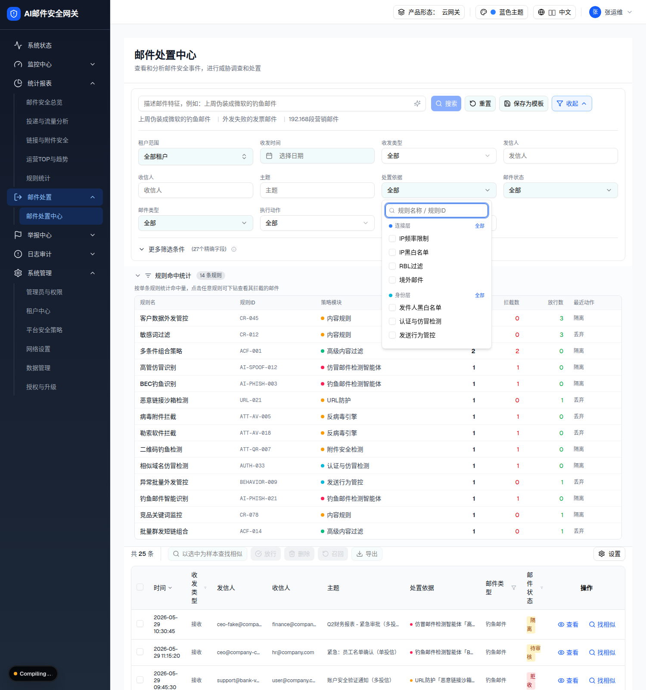

| 属性 | 值 |
|---|---|
| 所属组件 | 2.1 搜索与筛选区 CompactSearchFilters |
| 主文件 | email-handling-disposal-center/index.html |
| 触发路径 | 搜索区高级面板 → 点击「处置依据」触发按钮（Popover 打开，默认 Browse 模式） |
| 范围说明 | 「规则命中统计」不在本规格范围（见主文件说明块） |
下方内嵌为 Browse 模式弹层真实 HTML。

| 阶段(色) | 模块（value → zh） |
|---|---|
| 阶段一 连接层● | IP频率限制(ip-rate-limit) / IP黑白名单(ip-blacklist) / RBL过滤(rbl-filter) / 境外邮件(overseas-mail) |
| 阶段二 身份层● | 发件人黑白名单 / 认证与仿冒检测 / 发送行为管控 / 收件人检测 / 用户黑白名单 |
| 阶段三 内容层● | 附件安全检测 / 反病毒引擎 / URL防护 / 内容规则 / 意图引擎 |
| 阶段四 智能分析层● | 钓鱼邮件检测智能体 / 仿冒邮件检测智能体 / 威胁回溯智能体 |
| 阶段五 综合策略● | 相似邮件检测 / 高级内容过滤 |
| 顶部输入(切模) | 输入规则名/ID → 切换 Input 模式：按 ruleId/ruleName/moduleName 联想 ruleOptions（≤12），命中显示 规则名 + 模块 + ruleId |
| 页脚 | 清空（同时清 disposalBasis[] 与 disposalRule） |
| 比对项 | demo 实际 DOM | 嵌入的 HTML | 一致 |
|---|---|---|---|
| 弹层容器 | w-64 p-2 + 顶部搜索 Input | 一致 | ✅ |
| 分组数 | 5 阶段分组，每组带色点 + 全部/清空 切换 | 一致 | ✅ |
| 模块总数 | 19 模块（合并 ATT-* 后） | 一致 | ✅ |
| 双模 | Browse(空输入) / Input(有输入联想) | Browse 实测 | ✅ |